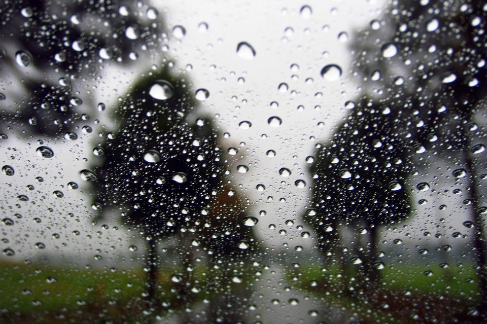

 Tipos de Chuva
Chuvas frontais
Também chamadas de ciclônicas, originadas do encontro entre uma massa de ar fria e outra quente.
Chuvas convectivas
Também chamadas de chuvas de verão, ocorrem devido à diferença de temperatura nas camadas próximas da terra.
Chuvas orográficas
Também chamadas de chuvas de relevo, estão ligadas a barreiras naturais do relevo.
 Tipos de Fenômenos
Tipos de Fenômenos
Zona de Convergência Intertropical (ZCIT )
Sistema que transfere calor e umidade dos oceanos para a atmosfera.
El Niño
Provoca secas severas no Norte e Nordeste, reduzindo significativamente as chuvas.
La Niña
Gera grandes volumes de chuva no Norte e Nordeste, aumentando a umidade e ocasionando frentes frias.
Ondas do Leste
Provocam chuvas intensas na costa leste do Nordeste, podendo causar enchentes.
Peculiaridades das Chuvas no Sertão
Irregularidade na ocorrência
O sertão do Ceará é muito irregular, isso ocorre por causa dos fenômenos do El Niño e La Niña.
Concentração das chuvas
As chuvas se concentram em um curto período do ano (fevereiro a maio ).
Distribuição espacial desigual
A chuva não se distribui de forma homogênea, algumas cidades chovem mais que outras.
Impactos Positivos das Chuvas
Reabastecimento dos reservatórios
O Ceará depende de açudes e barragens para armazenar água.
Crescimento da vegetação
Com a chegada das chuvas, a Caatinga volta a ficar verde rapidamente.
Melhoria na agricultura familiar
O período chuvoso permite plantio e colheita, reduzindo a insegurança alimentar.
Melhora na qualidade de vida
A chuva traz alívio no calor e reduz a escassez de água.